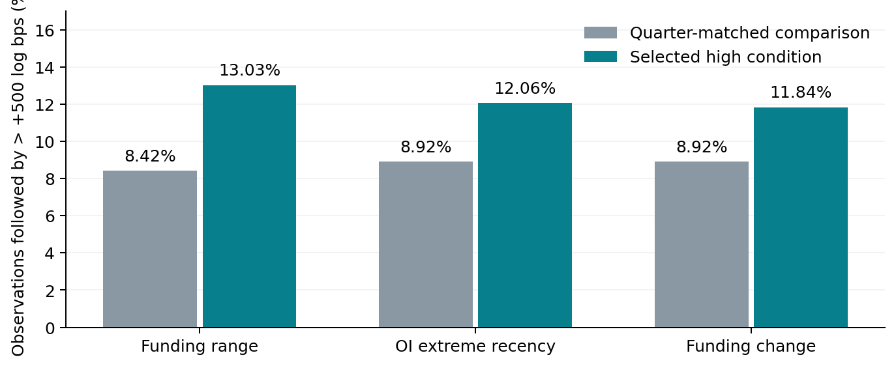
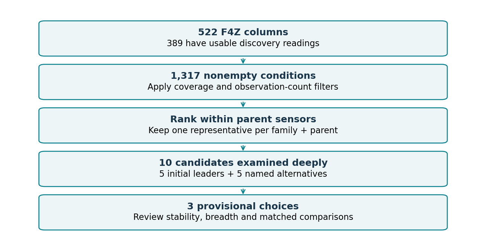
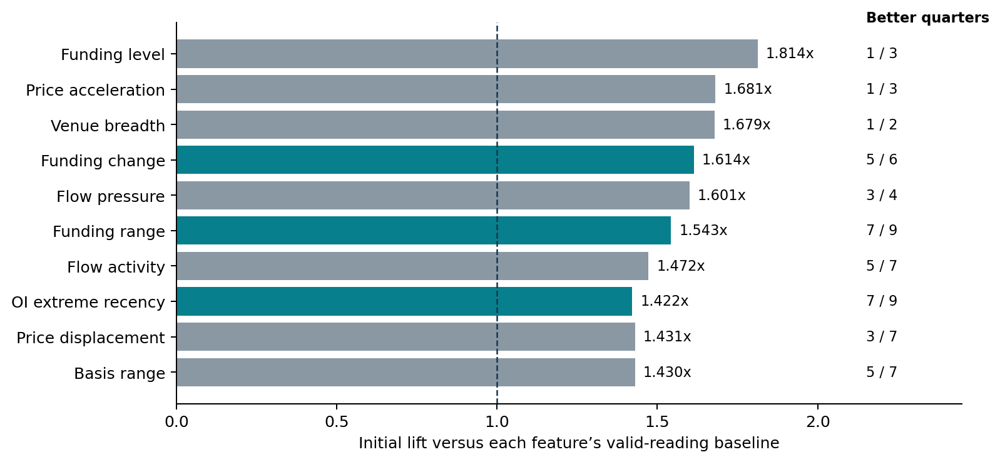
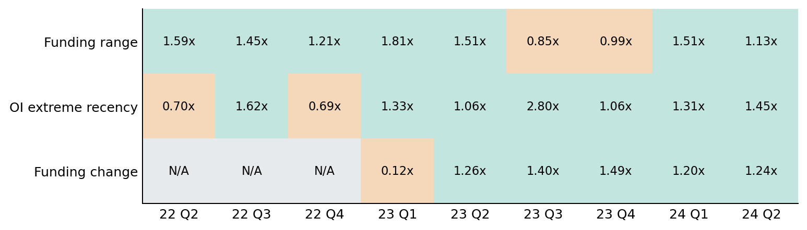
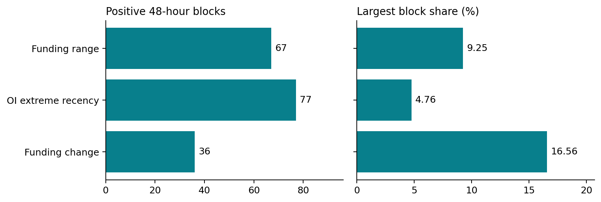

SCALEWAVE · BTCUSDT · RESEARCH EXPLANATION · 30 OCTOBER 2026
The shortlist favors patterns that recur across market periods, rather than simply taking the three highest historical lifts.
The three provisional choices are funding range (1h percentile), OI extreme recency (1h percentile), and funding change (4h robust z-score). Each was examined individually under a high-reading condition. They are candidates for further research, not a validated combined trading signal. [2, 3]
At a given minute, do particular market readings identify a higher frequency of BTCUSDT finishing 48 hours later with a signed log return above +500 bps? This is an endpoint-return target; it is not a test of whether price merely touches a level during those 48 hours. The documented formula is 10,000 × ln(P[t+48h] / P[t]), using cross-venue minute VWAP. +500 log bps is about +5.13% in simple-return terms. [2: Step 12L; 3]

Figure 1. Historical event frequencies in the discovery sample. Comparison rates are weighted within-quarter, condition-false rates; these are not live forecasts or trade win rates. Source: [2], Step 12A.
How to read this: funding range identified approximately 13 qualifying outcomes per 100 observations, compared with about 8.4 per 100 in its quarter-matched comparison. Neighboring observations overlap, so these are not 100 independent trades.
The ordinary-return file contained 1,223,576 rows between −500 and +500 bps. The extreme-return file contained 222,183 rows outside that band. Combining them produced 1,445,759 observations. Crucially, the extreme file also contains large downward moves. Only signed_return > 500 is a positive event; all other valid returns form the non-event group. [1]
The inspection checked matching schemas, valid labels, a 2,880-minute horizon, correct file membership and no duplicate or overlapping timestamps. One roughly two-day historical gap was identified; the history is not perfectly continuous. [1]
Discovery runs from 22 April 2022 through 30 June 2024 UTC: 1,150,558 observations and 95,773 positive events, a baseline frequency of 8.324%. July 1–2 is a boundary exclusion; the reserved evaluation period begins July 3, 2024. Inspection described that period’s labels, but selected-feature validation there has not been completed. The roadmap treats the split and purge as provisional. [1, 3]

Figure 2. The research sequence. The ten were a selected set for deeper investigation, not an exhaustive top-ten ranking. Source: [2], Steps 10B–12B; [3].
For each feature, keep readings whose Boolean validity flag is true and whose value is finite. Missing values, invalid flags and infinities are excluded. Of 522 value columns, 389 had usable discovery readings and 133 did not. Seven family availability fields showed no timestamps later than decision time in the inspection audit. This is evidence about the supplied timestamps, not independent proof of the entire data pipeline. [1; 2: Steps 8B–10A]
For each usable feature, test HIGH_90 (at or above its discovery 90th percentile), LOW_10 (at or below its 10th percentile), POSITIVE (> 0), and NEGATIVE (< 0), where populated. The thresholds are calculated from valid discovery readings. Ties can make a high/low group larger than exactly 10%. There were 1,317 nonempty feature-condition records. [2: Steps 9A–10B]
| Rule | What it prevents |
|---|---|
| At least 1,000 condition observations | Ranking a condition supported by only a handful of minute rows. |
| At least 10% discovery coverage | Promoting a feature available during only a very small slice of history. |
| Nonempty condition and defined event frequency | Ranking empty or unusable results. |
These are screening rules, not statistical-significance tests. The 1,000 observations are not necessarily 1,000 independent market events. [2: Step 10B]
Eligible conditions are sorted by lift, then positive-event count, then coverage, all descending. The code keeps the best condition per feature and then one representative per family + parent sensor. This avoids filling a shortlist with multiple horizons or transformations of the same underlying measurement. It is not a correlation or redundancy test between different sensors. The corrected catalog inferred 42 parent sensors. [2: Steps 7, 10B]
There was no predefined requirement such as “must win seven quarters” or “must cover 60 blocks.” The later choice used descriptive evidence and research judgment. Five alternatives were explicitly named in code; they were not selected by an exhaustive optimization. [2: Step 11E; 3]
Lift = event frequency under the condition ÷ event frequency among all valid readings of that feature. It measures how much more common the target outcome was. A 1.5× lift means a 50% higher event frequency, not a 50% larger price return. [2: Steps 9A–10B]
For funding range, the selected condition had a 13.0271% event frequency. Its valid-reading baseline was 8.4447%, giving about 1.543× lift. The notebook separately calculates overall lift against the common 8.324% discovery baseline. Those denominators should not be mixed. [2: Step 11A]

Figure 3. All ten investigated candidates, in investigation-group order. Teal marks the eventual three. The right column counts quarters with lift above 1 among quarters where the selected condition occurred. Source: [2], Step 13A.
Funding level initially led at 1.814×, but its selected condition occurred in only three quarters and beat its quarterly baseline in just one. Price acceleration also beat baseline in only one of three quarters. Their aggregate strength was not accompanied by broad quarterly consistency.
Funding range and OI extreme recency each beat their quarterly baseline in seven of nine quarters. Funding change did so in five of six. The shortlist therefore favored recurring associations and breadth over the biggest pooled lift. This is a qualitative selection rationale, not a formal statistical proof that the three are best. [2: Steps 11B–12B; 3]
The same discovery-fitted threshold was applied to every quarter; it was not re-tuned quarterly. This asks whether the association persists when market conditions change. Each quarter’s lift uses that feature’s valid readings in that quarter as its baseline. [2: Steps 11B, 11F]

Figure 4. Quarterly lift. Green: above 1; amber: at or below 1; gray: no usable comparison here. Values are rounded; the 0.992 funding-range result is below 1 despite displaying as 0.99. Source: [2], Steps 11B and 11F.1.
A 48-hour outcome measured every minute overlaps heavily with nearby outcomes. The discovery data contains 1,123 contiguous positive runs and 124 fixed 48-hour blocks containing positive events. Runs and blocks are descriptive ways to inspect concentration; neither guarantees independent outcomes. [2: Step 11C; 3]

Figure 5. Left: blocks containing at least one positive observation under the condition. Right: share of all condition-positive rows contributed by the largest block. These are not block success rates; active-block denominators differ and were not reported uniformly for all ten. Source: [2], Steps 11D and 11G.
OI extreme recency had the broadest positive-block support and lowest concentration among these three. Funding change remained a candidate despite weaker coverage and greater concentration, supported by its recurring quarterly association.
A condition can appear successful because it occurs mostly in quarters where large positive returns are already common. The quarter-matched analysis asks: within the same quarter, was the event more frequent when the condition was true than when it was false? Only valid readings are used in either group. [2: Step 12A]
For each quarter, calculate the event rate among other valid observations where the condition is false. Multiply that rate by the number of condition-true observations in that quarter. Add these expected event counts across quarters, then divide by the total condition-true count. This gives the quarter-matched comparison rate.
Adjusted ratio = observed condition-event rate ÷ quarter-matched comparison rate. The notebook therefore weights quarters according to where the condition occurred; it does not simply average quarterly ratios.
| Feature | Observed | Matched | Difference | Ratio |
|---|---|---|---|---|
| Funding range | 13.03% | 8.42% | +4.61 pp | 1.547× |
| OI extreme recency | 12.06% | 8.92% | +3.14 pp | 1.352× |
| Funding change | 11.84% | 8.92% | +2.92 pp | 1.328× |
Source: [2], Step 12A. “pp” means percentage points. The matched baseline excludes condition-true observations, unlike the initial valid-reading baseline.
Funding range retains the largest adjusted increase among the three. Its +4.61 percentage-point difference means approximately 4.6 additional qualifying outcomes per 100 observations relative to the matched rate. It is not a 4.61% expected trading return.
It reduces broad quarter-composition effects. It does not control for every other market factor, remove within-quarter dependence, or establish causation. No confidence interval or significance test accompanies this comparison.
Selection-order caveat: the three sensors were already named in the code before this calculation. The check supports their provisional shortlist and ordering; it did not select the best three by comparing all ten on the same adjusted metric. The other seven still lack this comparison. [2: Step 12A; 3]
All three use HIGH_90. The numeric cutoffs below are rounded values displayed in the notebooks; any implementation should use the full-precision saved thresholds. A feature’s 1h or 4h lookback describes its input history; the outcome horizon remains 48 hours. [2: Steps 11B, 11E]
The parent sensor is maximum minus minimum genuine funding over the lookback. The selected F4Z value expresses that range as a historical percentile. The selected condition is approximately value ≥ 0.9210. It reflects an unusually wide funding path, not necessarily a positive funding level or a bullish direction.
Why selected: 93.85% coverage, 109,011 condition observations, 14,201 positive outcomes, seven of nine better quarters, 67 positive blocks and the strongest quarter-adjusted ratio of the three.
The parent sensor measures how recently the latest open-interest extreme occurred, scaled to the horizon, when the OI path is non-flat. Its F4Z percentile condition is approximately value ≥ 0.9010. An extreme may be a high or a low; this reading alone does not identify new longs or bullish positioning.
Why selected: 94.79% coverage, 114,358 condition observations, 13,790 positive outcomes, seven of nine better quarters and the broadest positive-block support: 77 blocks.
The parent is the net change in cross-venue funding. F4Z compares this change with its historical median and scales it using a robust measure of variability. The condition is approximately value ≥ 2.910220. A high normalized reading means a high change relative to history; it should not automatically be interpreted as positive raw funding or a guaranteed raw funding increase.
Why selected: 58.18% coverage, 67,065 condition observations, 7,941 positive outcomes and five of six better quarters. Its lower coverage and more concentrated support remain limitations.
The three dictionary entries matched their parent formula-definition hashes, and X/Y formula-reference documents matched byte for byte. This verifies documented definitions, not the full build lineage of the screening exports. Sampled scientific-status fields were PROVISIONAL; usable data does not mean scientifically approved. [1; 2: Steps 12E–12G; 3]
These are three promising individual market-context indicators for further testing. The work does not yet establish a deployable trading rule.
Data and label checks; valid-reading filtering; high/low/sign condition screening; minimum count and coverage gates; lift ranking; one representative per parent sensor; quarterly stability; positive-run and block support; concentration review; matched-quarter comparisons for the three; and documented sensor-definition checks. [1–3]
Evaluate candidates consistently. Extend matched-quarter comparisons to the other seven and use identical support denominators. Consider other plausible parent sensors. Freeze a selection rule before inspecting validation performance.
Test combinations explicitly. For example, test funding range high AND OI extreme recency high against each constituent alone using comparable valid observations. The notebooks have not performed this experiment, so no combination benefit is claimed.
Evaluate on later data. Apply frozen thresholds to the reserved period after agreeing the split and boundary exclusion. Many conditions were explored, which can make the strongest discovery results look better by chance. Overlapping outcomes need to be respected in any uncertainty assessment.
Separate event research from trading performance. Event frequency does not provide expectancy, drawdown, fees, slippage, position sizing or the distribution of non-event returns. These have not been evaluated as a strategy here.
f4z__funding__funding_range_percentile__1h__value
f4z__oi__oi_extreme_recency_percentile__1h__value
f4z__funding__funding_change_rz__4h__value
“We screened individual F4Z conditions for elevated positive-return frequency, then favored funding range, OI extreme recency and funding change because their associations had more recurring quarterly and temporal support; their quarter-matched results remain promising, but combinations and independent validation are still outstanding.”
Source: [2], Steps 10B–13A; [3], pages 4–6. Further work above is a proposed continuation, not a claim that those tests have been performed.
This report explains the supplied analysis. Numerical results are taken from saved notebook outputs and checked against the roadmap; the underlying Parquet analysis was not rerun for this report. Charts are newly drawn from those reported values. References below identify the primary project evidence, rather than external trading opinions.
Location: Notebooks/01_Data_Inspection.ipynb. Cells listed below are one-based positions in the notebook JSON, not execution numbers.
Cells 8–20: schemas, labels and partition checks. Cells 22–30: event distribution and timestamp coverage/gap. Cells 34–36: chronological split and event counts. Cells 38–40: availability audit. Cells 42–52: validity, coverage and sampled status reasons.
Location: Notebooks/02_F4Z_Feature_Screening.ipynb. Use the STEP headings to locate the analysis.
| Step / one-based cell | Evidence used in this report |
|---|---|
| 7 / 14; 8B / 20 | Corrected parent catalog and valid-flag mapping. |
| 9A / 22; 9E / 30 | Conditions, quantiles, finite values and lift. |
| 10A / 36; 10B / 38 | Counts, 1,000-observation and 10% coverage gates, ranking. |
| 11A / 40; 11B / 42 | Initial metrics, top-five thresholds and quarterly results. |
| 11C / 44; 11D / 46 | Discovery runs/blocks and original-five event support. |
| 11E / 48; 11F.1 / 52; 11G / 54 | Named alternatives, thresholds, stability and support. |
| 12A / 56; 12B / 58 | Three-only matched comparison and provisional ordering. |
| 12E / 64; 12F / 66; 12G / 68 | Dictionary entries and formula-reference verification. |
| 12L / 78; 12N / 82 | Canonical outcome documentation and target consistency. |
| 13A / 84 | Consolidated ten-candidate comparison. |
Location: RoadMap/My_RoadMap.pdf. Pages 1–3: research sequence and ten candidates. Page 4: temporal support and provisional top three. Pages 5–6: incomplete comparisons, provenance limitations and next steps.
Source file hashes are recorded in source_manifest.json beside this report. The accompanying HTML, figures and build script allow the presentation to be inspected and regenerated. No datasets were uploaded to an external service.